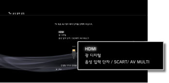
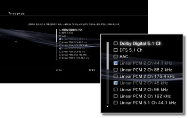
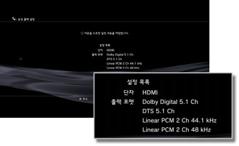

음성 출력 설정
PS3™의 음성 출력을 설정합니다. 이 설정은 주로 홈 시어터용 AV 앰프와 같은 디지털 음성 출력에 대응하는 음성 기기를 연결한 경우에 사용됩니다.
1. |
사용하시는 음성 기기의 대응 포맷을 확인합니다. |
||||||||||||
|---|---|---|---|---|---|---|---|---|---|---|---|---|---|
2. |
|
||||||||||||
3. |
[음성 출력 설정]을 선택합니다. |
||||||||||||
4. |
음성 기기에서 입력 단자를 선택합니다. 지원되는 채널 번호와 오디오 포맷은 사용하는 단자에 따라 다릅니다. 
|
||||||||||||
5. |
음성 출력 포맷을 선택합니다.  |
||||||||||||
6. |
설정을 확인합니다.  |
||||||||||||
7. |
설정을 저장합니다. |
 를 누르면 이전 화면으로 돌아가서 설정을 수정할 수 있습니다.
를 누르면 이전 화면으로 돌아가서 설정을 수정할 수 있습니다.알아두기
- 구입시의 설정에서는 모든 출력 단자에서 [Linear PCM 2ch]의 음성을 출력할 수 있도록 설정되어 있습니다. 음성 출력 설정을 변경하면 설정한 단자에서만 음성이 출력됩니다.
- 음성 출력 설정을 변경한 경우, 복수의 출력 단자에서 동시에 음성을 출력할 수는 없습니다. 예를 들어 PS3™와 TV를 HDMI 케이블로 연결하고 PS3™와 오디오 기기를 광 디지털 케이블로 연결한 후 [음성 출력 설정]을 [광 디지털]로 전환한 경우, TV에서는 소리가 나지 않게 됩니다. TV에서 소리가 나게 하려면 설정을 [HDMI]로 전환하거나
 (설정) >
(설정) >  (사운드 설정) > [음성 동시 출력]을 [켜기]로 설정해 주십시오.
(사운드 설정) > [음성 동시 출력]을 [켜기]로 설정해 주십시오. - 5단계에서 [Linear PCM 2 Ch 88.2 kHz] 또는 [Linear PCM 2 Ch 176.4 kHz]를 선택하면 오디오 기기에 따라서는 소리가 끊어지거나 나오지 않는 경우가 있습니다.
- HDMI 케이블을 사용하고 있는 경우, PlayStation®2/PlayStation® 규격 소프트웨어에서는 [Linear PCM 2ch]의 음성만 출력할 수 있습니다. Dolby Digital이나 DTS®의 음성을 출력하려면 PS3™와 오디오 기기를 광 디지털 케이블로 연결하고 [음성 출력 설정]을 [광 디지털]로 전환해 주십시오.
- HDCP (High-bandwidth Digital Content Protection) 규격에 대응하지 않는 기기를 HDMI 케이블로 연결하면 PS3™의 영상 및 음성을 출력할 수 없습니다.
- Blu-ray 3D™ 영상을 재생하고 있을 때, 음성 출력 포맷이 Dolby TrueHD로 설정되어 있는 경우, Dolby Digital로 출력됩니다.
중요
- PS3™에서 일부 PlayStation®2 및 PlayStation® 규격 소프트웨어가 종래의 PlayStation®2 및 PlayStation®에서와 다르게 동작하거나 적절히 동작하지 않는 경우가 있습니다.
- 또한 일부의 PS3™는 PlayStation®2 규격 디스크의 재생에 대응하지 않습니다. 상세한 사항은 [재생할 수 있는 디스크의 종류에 대하여], 각 지역 웹 사이트 또는 제품에 동봉된 사용설명서를 참조해 주십시오.